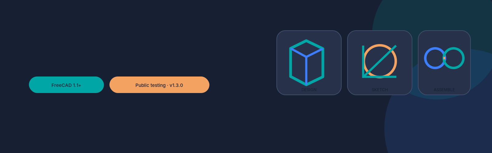
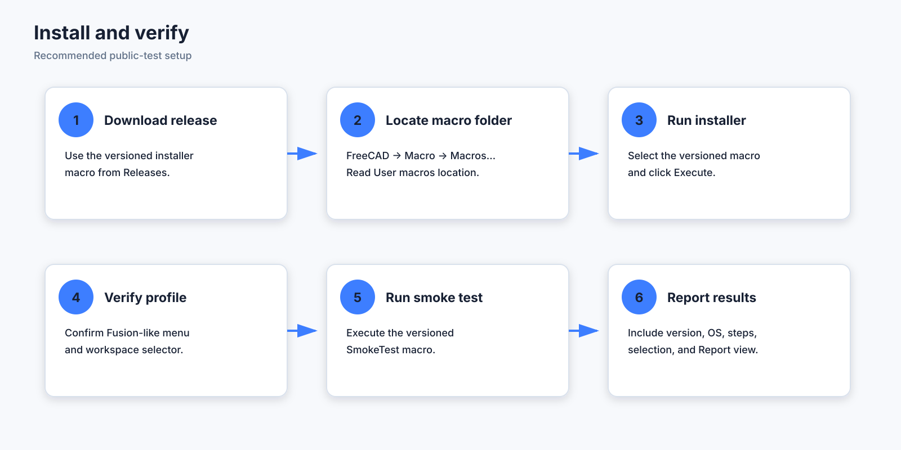
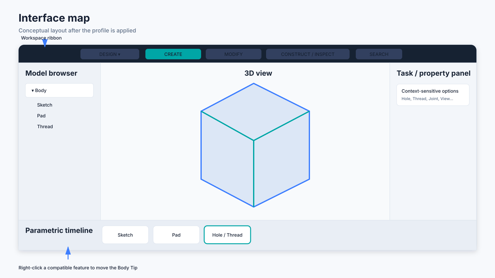
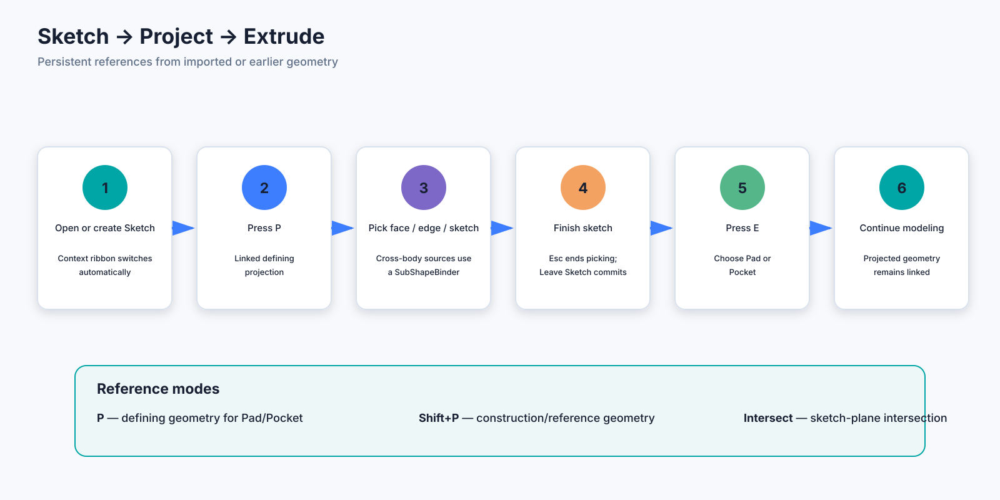
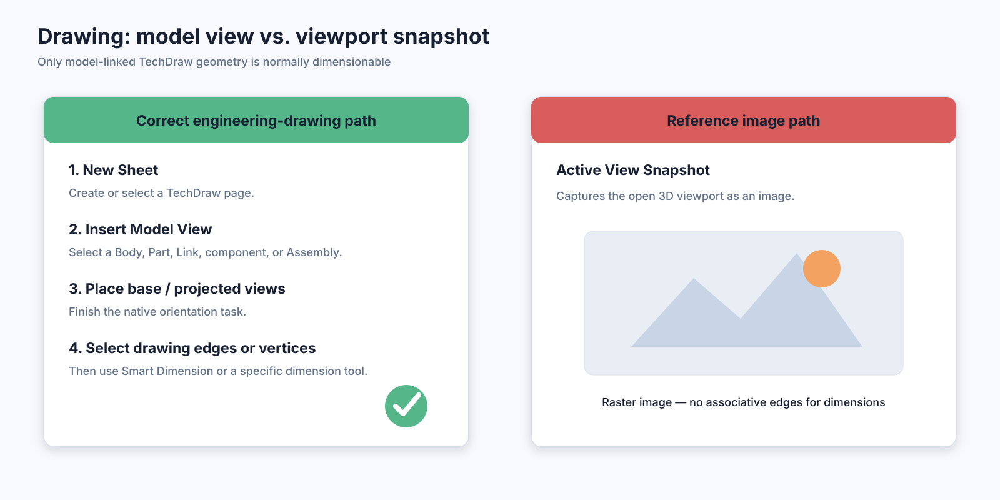
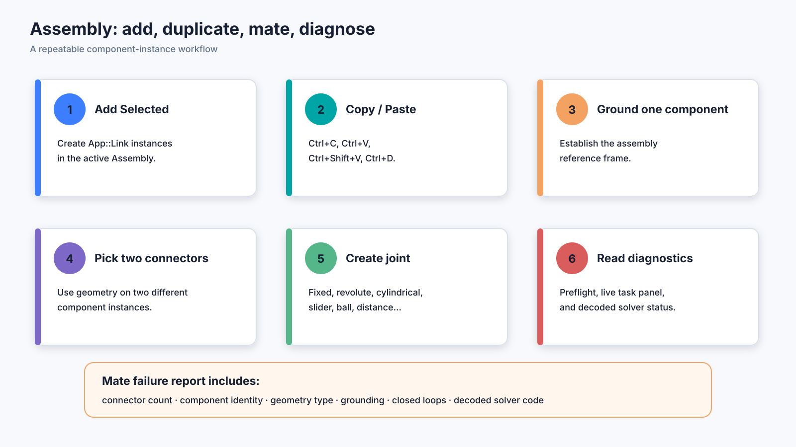
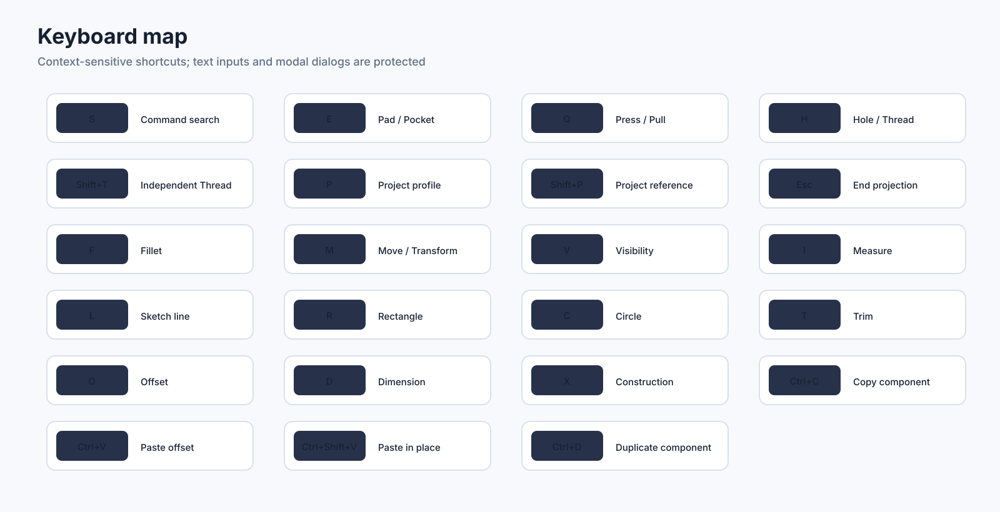

Independent public-test project for FreeCAD 1.1+. No Autodesk assets.
Not affiliated with Autodesk or the FreeCAD project.
Installation and setup guide

Requirements
- FreeCAD 1.1 or newer with the standard Part Design,
Sketcher, TechDraw, and Assembly modules available.
- Permission to write to your FreeCAD user-data directory.
- A backup of important
.FCStd documents before
public-testing a new build.
The installer checks the FreeCAD version before writing the add-on.
Use FreeCAD’s own Macro → Macros… dialog to locate the
macro directory; this is more reliable than hard-coded operating-system
paths.
Recommended installation
- Close active Sketch, Hole, Thread, Drawing, or Assembly task
dialogs.
- Download
macros/Install_FusionLike_FreeCAD_v1.3.0.FCMacro.
- Open FreeCAD.
- Choose Macro → Macros….
- Read the User macros location shown in the
dialog.
- Copy the installer macro into that directory.
- Return to the Macro dialog, select the installer, and click
Execute.
- Confirm the installation message.
- Verify that a Fusion-like menu appears and that the
top workspace selector contains DESIGN,
ASSEMBLE, and DRAWING when those
native workbenches are present.
Restarting is normally unnecessary. Restart once when upgrading from
a runtime that has been loaded for a long session, or when an old native
task dialog remains open after installation.
What the installer writes
The installer creates this user module:
<FreeCAD user data>/Mod/FusionLikeUI/
├── Init.py
├── InitGui.py
├── fusion_like_ui_runtime.py
└── README.txt
InitGui.py waits for the FreeCAD main window, imports
the runtime, and retries startup if the GUI is not ready yet.
The installer also stores profile state under:
User parameter:BaseApp/Preferences/FusionLike
That state includes whether the profile is enabled, the installed
version, the original workbench/layout state, and selected workflow
preferences.
Upgrade from v1.0-v1.2
Run the v1.3 installer directly over the earlier version.
- Do not run the uninstaller first.
- The original interface backup captured during the first installation
is preserved.
- The loaded older runtime is asked to restore and remove its event
hooks before replacement.
- Existing modeled documents are not rewritten by the installer.
Verify the installation
Run macros/FusionLikeUI_SmokeTest_v1.3.0.FCMacro through
Macro → Macros….
The smoke test checks:
- installed version and runtime path
- required public runtime functions
- availability of key FreeCAD commands currently registered
- profile preference state
Workbench-specific commands can appear unavailable until the
corresponding native workbench has been activated once. Activate Part
Design, Sketcher, Assembly, and TechDraw, then rerun the smoke test if
needed.
Manual source-tree
installation
This method is intended for developers.
- Create
<FreeCAD user data>/Mod/FusionLikeUI/.
- Copy
packaging/Init.py and
packaging/InitGui.py into it.
- Copy
src/fusion_like_ui_runtime.py into it with that
exact filename.
- Copy
packaging/installed_README.txt as
README.txt.
- Restart FreeCAD.
The release installer is preferred for testers because it also
handles original-state capture, loaded-runtime replacement, version
checking, and immediate activation.
First-run setup
- Start in DESIGN and confirm middle-mouse pan,
Shift+middle-mouse orbit, and mouse-wheel zoom.
- Create or edit a Sketch and confirm that the ribbon changes to
Sketch tools.
- Open DRAWING once so TechDraw registers its
actions.
- Open ASSEMBLE once so the Assembly actions and
diagnostic wrappers are registered.
- Run the smoke test.
Restore without uninstalling
Choose:
Fusion-like → Restore original FreeCAD interface
This disables the profile, removes its runtime widgets and event
filters, restores saved navigation preferences, reactivates the original
workbench when available, and restores the saved Qt window state.
To re-enable it later, choose:
Fusion-like → Apply / rebuild Fusion-like profile
Uninstall
- Close active task dialogs.
- Run
macros/Uninstall_FusionLike_FreeCAD_v1.3.0.FCMacro.
- Restart FreeCAD once.
The uninstaller attempts to restore the original interface before
removing the user module.
Installation troubleshooting
Installer reports
that FreeCAD is too old
Install FreeCAD 1.1 or newer. The runtime depends on APIs and
commands not consistently available in earlier releases.
Nothing appears after
installation
Open View → Panels → Report view and look for
messages prefixed [Fusion-like UI]. Restart FreeCAD once,
then rerun the smoke test.
Activate the corresponding native workbench once. FreeCAD registers
some actions lazily.
The interface is duplicated
Choose Fusion-like → Apply / rebuild Fusion-like
profile. The rebuild removes existing profile toolbars before
recreating them.
The original layout
is not restored exactly
Qt layout state can differ when dock widgets or workbenches have
changed between FreeCAD builds. Use FreeCAD’s native View →
Panels and View → Toolbars menus to make final
adjustments, then report the build and steps used.
Ten-minute quick start
This walkthrough confirms the major workflows without requiring a
production model.
1. Confirm the interface
Choose DESIGN in the workspace selector. You should
see Create, Modify, and Construct/Inspect groups, a model browser on the
left, a task/property area, and the feature timeline along the
bottom.

2. Create a sketch and solid
- Create a new document.
- Create a Part Design Body.
- Start a Sketch on the XY plane.
- Confirm that the ribbon changes to Sketch primitives and
constraints.
- Draw a rectangle with R.
- Leave the Sketch.
- Press E and choose Add / Pad.
3. Project a face and cut it
- Select a face of the Pad and create another Sketch on it.
- Press P.
- Click an outer edge or a suitable face boundary.
- Press Esc to end projection picking.
- Add any additional sketch geometry required for a closed
profile.
- Press E and choose Cut /
Pocket.

4. Try a threaded hole
- Create a Sketch containing a point or circle where the hole should
be placed.
- Select the Sketch.
- Press H.
- Choose Hole & Thread.
- Select a standard and size.
- Use cosmetic representation for a fast test, or modeled
representation for physical helical geometry.
5. Create a dimensionable
drawing
- Choose DRAWING.
- Click Insert Model View.
- Select the Body as the source and create a new default sheet.
- Complete the base/projected-view task.
- On the drawing page, select an actual projected edge or vertex.
- Use Smart Dimension.
Do not use Active View Snapshot for this test; it
creates a raster image.

6. Create a small assembly
- Save the document or open two saved component documents.
- Choose ASSEMBLE.
- Create or activate an Assembly.
- Select a source Part or Body and click Add Selected
twice, or duplicate an inserted component with
Ctrl+D.
- Ground one component.
- Select compatible connector geometry on two different
instances.
- Create a native joint.
- Run Solve and show diagnostics.

7. Verify recovery
Choose Fusion-like → Restore original FreeCAD
interface, then reapply the profile. This confirms that the
reversible state path works before you begin public testing.
Graphical user guide
This guide describes the tester-facing behavior of version 1.3.0. The
illustrations are conceptual diagrams, not screenshots from a specific
FreeCAD theme or operating system.
Interface orientation
The top workspace selector determines the main ribbon:
- DESIGN: solid Part Design, Sketch entry,
projection, Hole, Thread, and inspection.
- ASSEMBLE: component insertion, copy/paste,
grounding, native joints, motion, BOM, and diagnostics.
- DRAWING: TechDraw sheets, model views,
projected/section/detail views, dimensions, annotations, symbols, BOM,
and export.
Sketch edit mode overrides the workspace ribbon temporarily. Leaving
the Sketch restores the previously active workspace ribbon.
Design workspace
Create
- Body and Sketch creation
- Pad/Pocket under Extrude
- Hole and threaded-hole workflow
- Revolution/Groove
- additive/subtractive Loft and Sweep/Pipe
- independent Thread
Modify
- Fillet, chamfer, draft, and thickness
- Press/Pull approximation using native Pad, Pocket, Thickness, Draft,
and Transform commands
- mirror and pattern
Construct / Inspect
- datum plane, line, point, and coordinate system
- measure, mass properties, geometry check
- fit, isometric, and visibility controls
Sketch and Project / Include
Contextual Sketch ribbon
When a Sketcher::SketchObject enters edit mode, the
profile presents:
- Finish: Leave Sketch, Cancel Sketch, View Sketch,
Section View, Stop operation
- Create: point, line/polyline, rectangle, arc,
circle/conic, slot, text, construction geometry
- Project / Include: defining projection, reference
projection, intersection, Carbon Copy
- Modify: trim, split, extend, fillet/chamfer,
offset, move, rotate, scale, symmetry, clipboard tools
- Constrain: dimension and geometric constraints
- Inspect: validation and conflict/redundancy
selectors
Linked defining projection —
P
Use when the projected result should participate in a closed Pad or
Pocket profile.
- Edit the destination Sketch.
- Press P.
- Select faces, edges, vertices, or an earlier Sketch.
- Press Esc when finished.
- Complete the profile and use E for Pad/Pocket.
Linked
construction/reference projection — Shift+P
Use for persistent design references that should not form the solid
profile by themselves.
Sketch-plane intersection
Creates linked defining curves where the selected geometry intersects
the active sketch plane.
Direct link vs.
SubShapeBinder
The runtime links geometry directly when FreeCAD permits the
dependency. Imported geometry, cross-Body geometry, and some cross-Part
references are routed through a synchronized
PartDesign::SubShapeBinder inserted before the destination
Sketch.
The operation is rejected when it would create a circular dependency,
reference a later feature in the same Body, or link directly to another
FreeCAD document.
Hole and Thread
Native Hole & Thread —
H
The dialog is a Fusion-style front end over a native
PartDesign::Hole. It supports installed FreeCAD standards,
sizes, classes, depth behavior, direction, modeled/cosmetic thread,
counterbore/countersink/counterdrill, drill point, taper, and
clearance.
Recommended workflow:
- Select a Sketch containing points, circles, or arcs, or select an
existing Hole.
- Press H.
- Choose Hole & Thread.
- Set hole type, standard, size, class, direction, depth, and
representation.
- Accept and recompute.
Independent cylindrical
Thread — Shift+T
Use on one or more cylindrical faces of the current Body Tip. The
result is a persistent PartDesign::FeaturePython that can
model a helical cut or store cosmetic callout metadata.
- Select cylindrical faces from the same source feature.
- Press Shift+T.
- Choose internal/external/automatic recognition, standard, size,
class, direction, extent, offset, and clearance.
- Select the Thread feature and press Shift+T again
to edit it.
Modeled threads increase recompute and file complexity. Cosmetic
threads are normally better for large fastener populations.
Drawing workspace
Insert Model View
This is the normal engineering-drawing path.
- Create or select a TechDraw sheet.
- Click Insert Model View.
- Choose one or more source Bodies, Parts, Links, components, or a
native Assembly.
- Select an existing sheet or create the default sheet.
- Complete the native base/projected-view task.
- Select actual drawing edges or vertices on the page.
- Use Smart Dimension or a specific dimension command.
Active View Snapshot
This inserts a raster image of the open 3D viewport. It is useful for
shaded reference illustrations but does not contain associative model
edges or vertices and is not normally dimensionable.
Dimension selection
The profile warns when:
- nothing is selected
- only a Page or model-tree view item is selected
- the selection is a raster Active View
- no drawing Edge, Vertex, or Face subelement is selected
Other drawing functions
- projected, section, detail, broken, and clipped views
- hatching and view stacking
- linear, radial, diameter, angular, area, chain, coordinate, and arc
dimensions
- centerlines, center marks, thread graphics, leaders, balloons, weld
and surface-finish symbols
- thread callouts linked to native Hole or independent Thread
features
- Assembly BOM creation and Spreadsheet/BOM placement
- PDF, SVG, and DXF export
Assembly workspace
Add and duplicate components
- Add Selected: insert selected model objects at
their current placement
- Ctrl+C: copy selected component sources
- Ctrl+V: paste new instances with an X offset
- Ctrl+Shift+V: paste in place
- Ctrl+D: duplicate selected components with an
offset
Instances are normally native App::Link objects. Native
subassemblies use Assembly::AssemblyLink when the build
exposes it.
Save both documents before linking components across files. The
profile rejects dependency loops and reports skipped sources.
Grounding
Ground at least one component or establish a grounded path. A fully
floating assembly has no reference frame and returns the native solver
status for “no grounded component.”
Connector selection
Choose geometry on two different component instances:
| Fixed |
faces, edges, vertices, datums, axes, coordinate systems |
| Revolute / cylindrical |
cylindrical faces, circular edges, explicit axes |
| Slider |
axes, straight edges, planar references, coordinate systems |
| Ball |
vertices, centers, point-like references |
| Parallel / perpendicular / angle |
planar faces, straight edges, axes, datum planes |
| Distance |
point, edge, face, axis, or datum references appropriate to the
relation |
Diagnostic stages
- Preflight checks connector count, component
identity, subelement type, obvious geometry mismatch, grounding, and
likely closed loops.
- Live task panel updates while the native joint task
is open.
- Post-solve report decodes the native solver result
and selects a newly failed joint when possible.
Native solver results decoded by the profile:
| 0 |
solved |
| -6 |
no grounded component |
| -4 |
over-constrained |
| -3 |
conflicting joints |
| -5 |
malformed/broken joint |
| -1 |
general solver error |
| -2 |
redundant joints |
Timeline and command search
Parametric timeline
The bottom timeline visualizes compatible document objects in
document order. Right-click a compatible Part Design feature to set the
Body Tip there or restore the latest solid feature. This is a Body-Tip
workflow aid, not Fusion’s native timeline engine.
Command search — S
Searches registered FreeCAD QAction commands and
triggers the selected action. Disabled commands are shown but cannot be
run.
Keyboard map

Shortcuts are ignored while focus is in a text field, spin box, combo
box, modal dialog, or unrelated window.
Restore and recovery
Use Fusion-like → Restore original FreeCAD interface
to remove profile widgets and restore saved layout/navigation state. Use
Apply / rebuild to re-enable it.
For errors, open View → Panels → Report view and
capture all relevant lines prefixed [Fusion-like UI].
Troubleshooting
First diagnostic steps
- Open View → Panels → Report view.
- Reproduce the problem once.
- Copy all lines prefixed
[Fusion-like UI] plus any
adjacent Python traceback.
- Run the v1.3 smoke-test macro.
- Record the FreeCAD version from Help → About FreeCAD → Copy
to clipboard.
Sketch ribbon does not
appear
- Confirm that a
Sketcher::SketchObject is actually in
edit mode.
- Wait a fraction of a second for late Sketcher command
registration.
- Choose Fusion-like → Apply / rebuild Fusion-like
profile.
- Activate the Sketcher workbench once, then return to Part Design and
edit the Sketch again.
- Check Report view for
_refresh_ui_context_if_needed
errors.
The runtime uses grouped-command IDs first and individual-command
fallbacks. A missing button can indicate that the corresponding native
command is not registered in that build. Search for the primitive with
S and include its action object name in the issue
report.
Projection fails
Common causes:
- destination Sketch is not in edit mode
- source is the destination Sketch itself
- source feature occurs later in the same Body
- source already depends on the destination Sketch
- cross-document direct links are attempted
- the selected subelement was deleted or renamed by a topology
change
For cross-document workflows, import or link the source into the
destination document first.
Pad or Pocket
cannot use a projected profile
- Confirm that P, not Shift+P, created defining
geometry.
- Check that the resulting loops are closed and
non-self-intersecting.
- Confirm the Sketch belongs to the active Body.
- Use Sketch validation and inspect redundant/conflicting
constraints.
Modeled thread is slow or
fails
- Try cosmetic mode to verify the standard/size metadata first.
- Reduce thread length.
- Remove extreme custom clearance.
- Confirm the selected face is cylindrical and belongs to the current
Body Tip source.
- Check for self-intersecting helical profiles or a boolean failure in
Report view.
Drawing view cannot be
dimensioned
- Confirm it is a model-linked TechDraw view, not
ActiveView / DrawViewImage.
- Select the actual projected edge or vertex on the drawing page.
- Wait for HLR recomputation to finish.
- Confirm the source object has a valid shape.
- Try a specific dimension command after Smart Dimension explains the
selection.
Assembly component cannot be
added
- Activate or create an Assembly.
- Save both source and Assembly documents for cross-document
links.
- Confirm the source object has a shape or is a supported
Part/Body/Link.
- Avoid linking a document back into itself through a dependency
cycle.
Two parts look
compatible but will not mate
Check in this order:
- The references belong to two different component
instances, not two faces of the same source object.
- One component is grounded or connected to ground.
- Connector geometry matches the joint type: axial references for
revolute/cylindrical; point-like references for ball.
- An earlier joint has not already removed the same degrees of
freedom.
- Offsets and reverse direction are not forcing an impossible
placement.
- Linked face/edge names are still valid after source-model
edits.
Run Why won’t this mate? before creation and
Solve and show diagnostics afterward.
Solver status guide
-6: ground a component-4: suppress the newest joint or replace multiple
constraints with a single intended joint-3: inspect conflicting joints and connector
directions-5: re-pick broken references-2: remove redundant joints-1: simplify the graph, check offsets, and report a
minimal case
Restore does
not recover the exact window layout
Qt window-state serialization depends on available docks and
workbenches. Manually restore remaining panels through View →
Panels and toolbars through View → Toolbars,
then report the FreeCAD build and before/after state.
Known limitations
Not an implementation clone
The project reorganizes and extends FreeCAD workflows. It does not
reproduce Autodesk’s kernels, cloud data model, T-spline environment,
timeline engine, assembly solver, CAM system, or drawing
implementation.
Topological naming
References to FaceN, EdgeN, and
VertexN can break when upstream topology changes. FreeCAD’s
element naming helps but cannot guarantee every reference survives a
major feature rewrite. Projection, threads, dimensions, and joints may
need repair.
Independent Thread
dependency
The independent Thread is a custom
PartDesign::FeaturePython. Its last saved shape can remain
visible without the profile, but editing or recomputing it requires the
runtime to be installed.
Modeled thread cost
Physical helical threads can greatly increase recomputation time,
file size, boolean complexity, meshing time, and drawing HLR time. Use
cosmetic threads unless physical flank geometry is required.
Thread standards
The independent cylindrical Thread intentionally omits standalone
NPT-style tapered-face behavior. Use the native threaded Hole workflow
for tapered internal threads supported by FreeCAD.
Projection boundaries
Direct cross-document Sketch external geometry is not supported.
Cross-Body and imported geometry are mediated through SubShapeBinders
when valid. Circular and future-history dependencies are rejected.
Drawing snapshots
Active View Snapshot is a raster image by design. It cannot be
converted automatically into an associative model view and is not a
source for normal TechDraw dimensions.
Drawing dimensions
The profile validates common selection mistakes but does not replace
TechDraw’s dimension engine. Dimension semantics, HLR completion, and
reference repair remain native FreeCAD behavior.
Assembly diagnostics
Preflight is advisory. Assembly compatibility depends on the complete
nonlinear constraint graph, connector frames, offsets, grounding, and
solver state. Geometrically similar parts are not guaranteed to solve
under a chosen joint type.
Assembly document links
Cross-document components require saved files and stable source
object identities. Moving, renaming, closing, or replacing source
documents can break links.
Qt widget sizes, action registration timing, menu text, and icons
vary across platforms and FreeCAD builds. The profile uses command IDs
and compatibility fallbacks, but some visual differences are
expected.
Static validation boundary
Repository CI can compile and inspect the code without importing
FreeCAD. It cannot exercise the live GUI, FreeCAD document model, Qt
signal behavior, or Open CASCADE geometry operations.
Public testing guide
Test philosophy
The repository supports three levels of validation:
- Static validation outside FreeCAD: syntax, embedded
payload equality, internal method resolution, documentation links,
release contents, and ZIP integrity.
- Smoke testing inside FreeCAD: installation state
and command registration without modifying a document.
- Manual workflow testing inside FreeCAD: real GUI
interactions and document recomputation.
Static checks cannot prove GUI or Open CASCADE behavior. Public test
reports are essential.
Static validation
From the repository root:
python tools/validate_package.py --repo .
python tools/build_release.py --repo . --check
The GitHub Actions workflow runs the same checks on pull
requests.
FreeCAD smoke test
Install the profile, then execute:
macros/FusionLikeUI_SmokeTest_v1.3.0.FCMacro
Record its output from Report view.
Manual test matrix
Installation and recovery
- I-01 Fresh install into a clean FreeCAD user
profile.
- I-02 Upgrade directly from v1.0, v1.1, and v1.2
where available.
- I-03 Rebuild the profile twice; confirm no
duplicate toolbars.
- I-04 Restore original interface, re-enable, then
uninstall.
- I-05 Restart FreeCAD and confirm automatic
startup.
Sketch context
- S-01 Enter Sketch from Part Design; confirm
contextual ribbon appears.
- S-02 Leave Sketch; confirm Design ribbon
returns.
- S-03 Test line, rectangle, circle, arc, slot, trim,
offset, dimension, and construction commands.
- S-04 Open Sketch immediately after workbench
activation; confirm delayed command registration triggers a
rebuild.
Projection
- P-01 Project a same-Body earlier edge and
Pad/Pocket the result.
- P-02 Project an entire planar face boundary.
- P-03 Project a whole earlier Sketch.
- P-04 Project imported STEP geometry through a
binder.
- P-05 Project across Bodies.
- P-06 Confirm later-feature and circular-reference
attempts are rejected.
- P-07 Change the source dimensions and confirm
linked projection updates.
Hole and Thread
- H-01 Native plain, counterbore, and countersink
holes.
- H-02 Cosmetic and modeled ISO metric threads.
- H-03 Left-hand and partial-depth thread.
- T-01 External independent thread on a
cylinder.
- T-02 Internal independent thread where supported by
selected face geometry.
- T-03 Edit an existing independent Thread with
Shift+T.
- T-04 Save, close, reopen, and recompute.
Drawing
- D-01 Insert Model View from a Body and add
projected views.
- D-02 Dimension visible linear, circular, and
angular geometry.
- D-03 Confirm Active View Snapshot is identified as
raster.
- D-04 Insert an Assembly as a source.
- D-05 Create section/detail views and hatching.
- D-06 Create a thread callout.
- D-07 Export PDF, SVG, and DXF.
Assembly
- A-01 Add Selected from same document.
- A-02 Add a component from a saved external
document.
- A-03 Copy, paste with offset, paste in place, and
duplicate.
- A-04 Ground a component and create
fixed/revolute/cylindrical/slider/ball joints.
- A-05 Deliberately select two connectors from the
same component; verify diagnostic.
- A-06 Deliberately create a redundant or conflicting
joint; verify decoded result.
- A-07 Test broken linked subelements after changing
source topology.
- A-08 Create exploded view, BOM, and simulation
where applicable.
Recommended test
environments
Report the exact environment rather than assuming equivalence:
- FreeCAD version and build hash
- Windows, macOS, or Linux distribution
- Qt/PySide generation if known
- Open CASCADE version if shown by About FreeCAD
- graphics backend/driver for display-specific failures
Bug report minimum
A useful report includes:
- test ID or exact workflow
- minimal
.FCStd file when shareable
- starting selection and active workbench
- expected result
- actual result
- all
[Fusion-like UI] messages and traceback
- whether the problem persists after restart and profile rebuild
Remove confidential geometry before uploading a document.